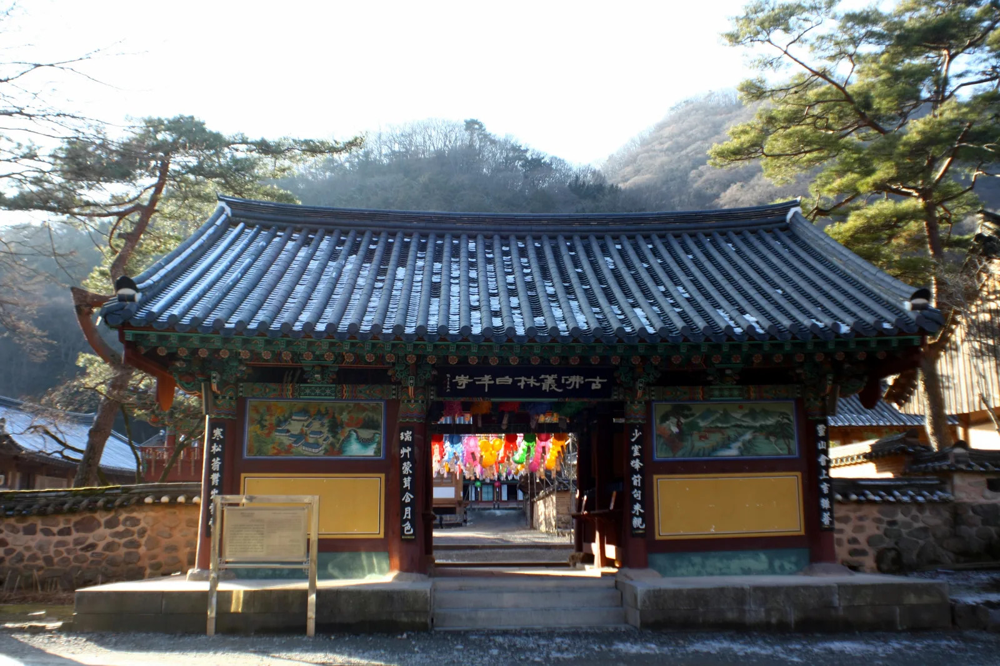
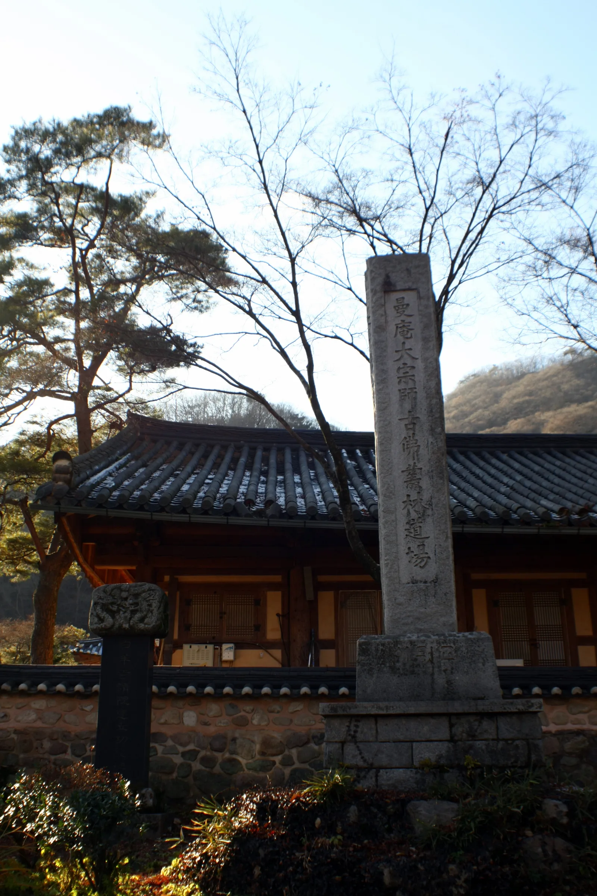
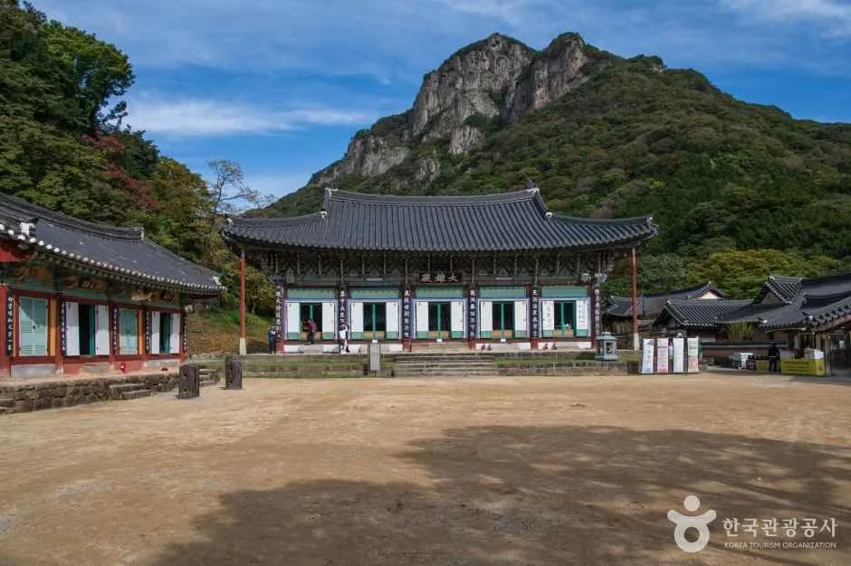
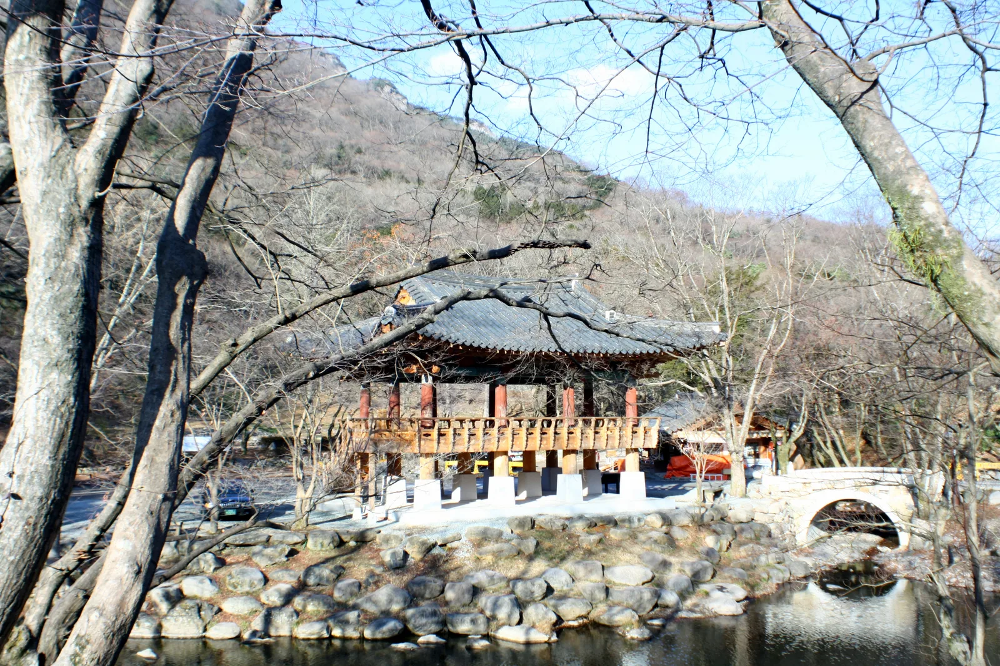
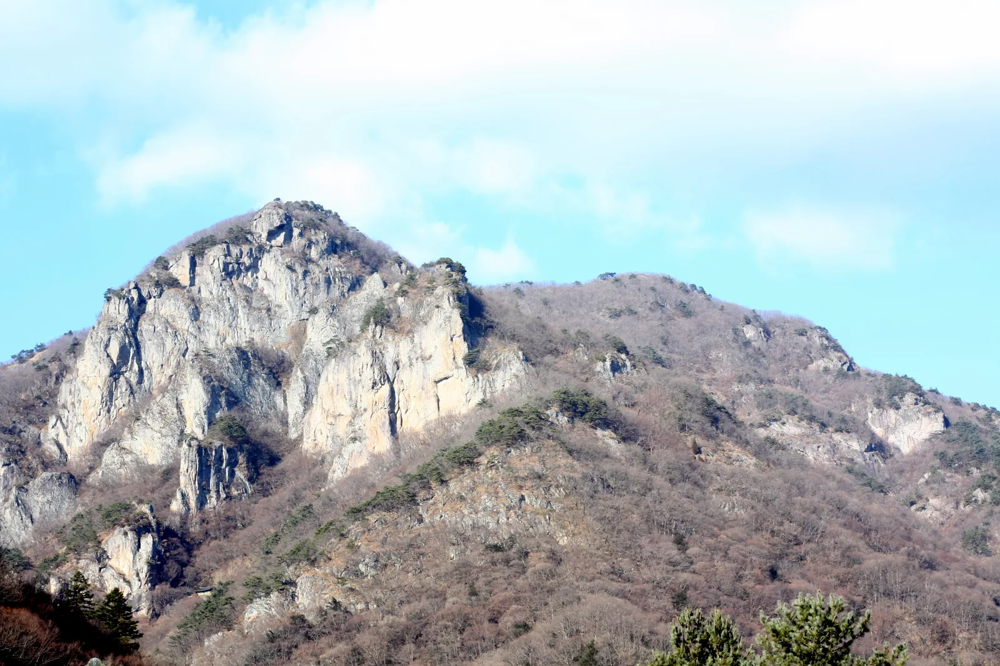
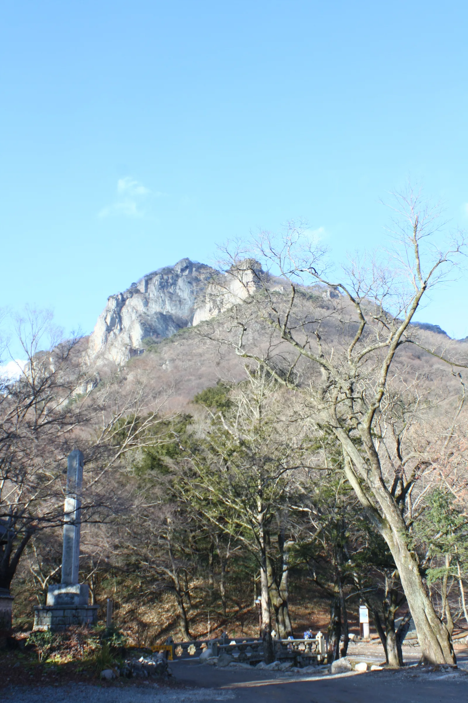
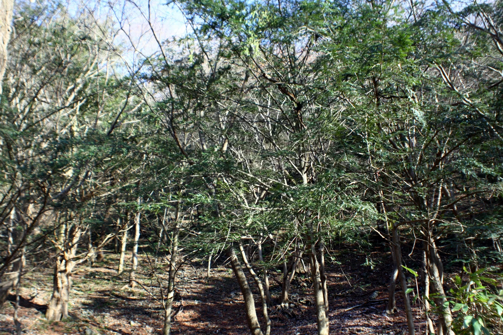

▲ 애기단풍이 물든 백양사 쌍계루. 두 계곡이 만나는 자리에 세워져 물 위에 비친 누각과 단풍이 어우러진 모습으로 유명하다 ⓒ 한국관광공사
전남 장성군 백암산 자락, 두 물줄기가 만나는 자리에 백양사가 있다. 632년(백제 무왕 33년) 여환 스님이 세운 뒤 백암사, 정토사를 거쳐 지금의 이름을 얻기까지 1,400년 가까운 세월이 쌓인 고찰이다. 가을이면 쌍계루 물그림자 위로 내려앉는 애기단풍이 전남 최고의 단풍 명소로 꼽히게 했다. 창건 설화와 이름의 유래, 명승 백학봉과 쌍계루, 장성백양단풍축제 일정, 백암산 등산코스, 입장료·주차·템플스테이 정보까지 2026년 기준으로 정리했다.
1. 흰 양이 눈물을 흘린 자리 — 창건과 이름의 유래

▲ 백양사 초입의 일주문. '고불총림 백양사' 현판이 걸려 있다. 1996년부터 고불총림으로 운영됐으나 2025년 2월 총림 지정이 해제돼 지금은 대한불교조계종 제18교구 본사로 운영된다 ⓒ Dalgial(Wikimedia Commons, CC BY-SA 3.0)
백양사는 632년 여환 스님이 창건해 당시 이름은 백암사였다. 1034년 중연 스님이 중창하며 정토사로 이름을 바꿨고, 지금의 이름을 얻은 것은 조선 선조 7년(1574년) 환양선사 때다. 전해지는 설화에 따르면 환양선사가 절 인근 영천굴에서 금강경 법회를 열었는데, 사흘째 되던 날 흰 양 한 마리가 나타나 설법을 들으며 눈물을 흘렸다. 이레째 법회가 끝난 날 밤 환양선사의 꿈에 그 흰 양이 나타나 '본래 하늘의 천인이었으나 죄를 지어 짐승이 되었다가, 설법을 듣고 다시 천인으로 환생하게 되었다'고 말했다. 이튿날 아침 암자 앞에 흰 양이 죽어 있는 것을 본 환양선사가 절 이름을 백양사(白羊寺)로 고쳐 불렀다고 전한다.

▲ 백양사 경내의 만암대종사 고불총림도량비. 근대 백양사를 중창하고 1947년 고불총림을 연 만암 종헌(1876~1957) 대종사를 기리는 비석이다 ⓒ Dalgial(Wikimedia Commons, CC BY-SA 3.0)
백양사 기본 정보
- 창건: 632년(백제 무왕 33년), 여환 스님
- 이름 변천: 백암사 → 정토사(1034년) → 백양사(1574년)
- 소속: 대한불교조계종 제18교구 본사(1996년부터 고불총림으로 운영됐으나, 2025년 2월 중앙종회 결의로 총림 지정이 해제돼 현재는 일반 교구본사로 전환됐다)
- 위치: 전남 장성군 북하면 백양로 1239, 내장산국립공원 백암산 지구
2. 쌍계루와 백학봉 — 물 위에 두 번 피는 단풍

▲ 백양사 대웅전에서 올려다본 백학봉. 학이 날개를 편 모습을 닮았다 하여 붙은 이름으로, 2023년 명승 구역이 기존보다 8배 넓게 재지정됐다 ⓒ 한국관광공사
백양사 앞 연못가에 자리한 쌍계루는 고려시대 각진국사가 두 계곡이 만나는 자리에 처음 세워 '쌍계루'라는 이름을 얻었다. 여러 차례 화재와 홍수로 무너지고 다시 지어지기를 반복했으며, 14세기 후반 재건을 거쳐 지금의 건물은 1986년 복원된 것이다. 고려 말 목은 이색과 포은 정몽주를 비롯한 문인들이 쌍계루에서 백학봉을 바라보며 남긴 시문이 전해질 만큼 예로부터 이름난 경관이었다. 백학봉은 2023년 국가지정문화재 명승으로 구역이 기존보다 약 8배 넓게 재지정되며 가치를 다시 인정받았다.
백양사 단풍이 '애기단풍'으로 불리는 이유는 잎이 작고 색이 유난히 곱기 때문이다. 이웃한 내장산과 함께 전남·전북을 대표하는 단풍 명소로 꼽히며, 쌍계루 연못에 비친 단풍이 마치 두 번 피는 것처럼 보인다 해서 '인생샷 명소'로도 알려져 있다.
내장산국립공원 백암산 지구 탐방 정보는 국립공원공단에서 확인 가능
3. 장성백양단풍축제 — 단풍이 절정에 이르는 시기

▲ 계절마다 다른 표정을 보여주는 쌍계루. 단풍이 지고 난 겨울에도 계곡과 어우러진 풍경으로 꾸준히 발길을 모은다 ⓒ Dalgial(Wikimedia Commons, CC BY-SA 3.0)
장성백양단풍축제는 1996년부터 이어져 온 전남 대표 가을 축제로, 백암산과 백양사 일대의 애기단풍이 절정을 이루는 시기에 맞춰 매년 10월 말에서 11월 초 사이 열린다. 정확한 개최일은 그해 단풍 절정 예보에 맞춰 매년 새로 정해지므로 방문 전 장성군 문화관광 홈페이지에서 최신 공지를 확인하는 것이 좋다.
| 구분 | 프로그램 |
|---|---|
| 공연 | 단풍숲 7080공연, 애기단풍 음악회, 야단법석 영산제 |
| 전시 | 백양단풍 분재전, 야생화전, 단풍엽서전 |
| 체험 | 단풍 책갈피 만들기, 곶감 만들기 체험 |
| 장터 | 지역 농특산물 판매 |
축제 최신 일정은 장성군 문화관광 홈페이지에서 확인 가능
4. 백학봉·약사암 등산코스 — 절 마당에서 능선까지

▲ 백학봉 정상부 암봉. 학이 날개를 펼친 듯한 형상이 이름의 유래가 됐다 ⓒ Dalgial(Wikimedia Commons, CC BY-SA 3.0)
백양사는 산책 삼아 둘러볼 수도 있지만, 능선까지 올라 백학봉 암봉을 가까이서 보려는 탐방객도 많다. 가장 기본적인 코스는 백양사에서 출발해 약사암, 영천굴을 거쳐 백학봉 정상(651m)에 오른 뒤 다시 내려오는 길이다. 체력에 여유가 있다면 상왕봉까지 능선을 타고 백양사로 원점 회귀하는 코스를, 종주에 도전하고 싶다면 전북 정읍의 내장사까지 이어지는 백양사-내장사 종주코스를 택할 수 있다.

▲ 백양사 경내에서 바라본 백학봉 능선. 절 마당에서도 암봉의 위용을 가까이 느낄 수 있다 ⓒ Dalgial(Wikimedia Commons, CC BY-SA 3.0)
| 코스 | 거리 | 소요시간 |
|---|---|---|
| 백양사 → 약사암 → 백학봉 왕복 | 약 2km | 약 2시간 30분 |
| 백양사 → 약사암 → 백학봉 → 상왕봉 → 백양사 | 순환 | 약 4시간 30분 |
| 백양사 → 내장사 종주코스 | 약 12km | 약 7시간 |
등산 팁
- 백양사 주차장에서 백양사 경내까지 도보 약 20분
- 약사암 구간은 계단과 오르막이 많아 초보자에게는 다소 힘들 수 있다
- 내장산국립공원 백암탐방안내소(10:00~17:00, 매주 월요일 휴무)에서 코스별 안내를 받을 수 있다
5. 입장료·주차·템플스테이 이용정보

▲ 백양사 비자나무숲. 고려시대 각진국사가 심은 약 5,000그루의 비자나무가 자라며, 천연기념물 제153호로 지정돼 있다 ⓒ Dalgial(Wikimedia Commons, CC BY-SA 3.0)
국립공원 입장료가 전면 폐지되면서 백양사는 현재 사찰 입장료와 주차 요금을 모두 받지 않는다. 공용주차장에서 대웅전까지는 도보로 10~20분 정도 걸리므로 편한 신발을 준비하는 것이 좋다. 절 인근에는 고려시대부터 이어진 비자나무숲(천연기념물 제153호)과 봄철 고불매(천연기념물 제486호)도 함께 볼거리로 꼽힌다.
| 구분 | 내용 |
|---|---|
| 사찰 입장료 | 무료 |
| 주차 요금 | 무료 |
| 운영 | 연중무휴 상시 개방 |
| 템플스테이(휴식형) | 1인 4만~6만 원 |
| 템플스테이(체험형) | 1인 6만~8만 원 |
| 종무소 문의 | 061-392-7502 |
| 템플스테이 문의 | 061-392-0434 |
템플스테이 예약 및 상세 정보는 공식 사이트에서 확인 가능
6. 정리
체크포인트
- 632년 창건, 1574년 환양선사가 흰 양 전설을 계기로 백양사로 개명했다.
- 쌍계루와 백학봉이 어우러진 풍경, 잎이 작고 고운 애기단풍으로 전남 최고 단풍 명소로 꼽힌다.
- 장성백양단풍축제는 매년 10월 말~11월 초 단풍 절정 시기에 열린다.
- 백학봉 코스는 왕복 약 2시간 30분, 상왕봉까지 순환하면 약 4시간 30분이 걸린다.
- 사찰 입장료와 주차 요금은 모두 무료이며, 템플스테이는 휴식형 4만~6만 원부터 이용할 수 있다.